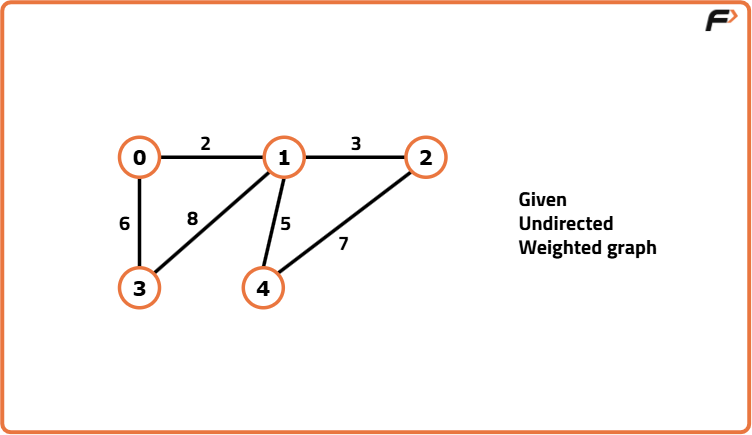
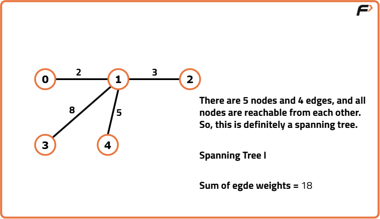
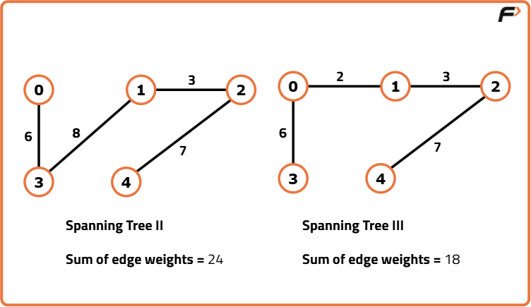
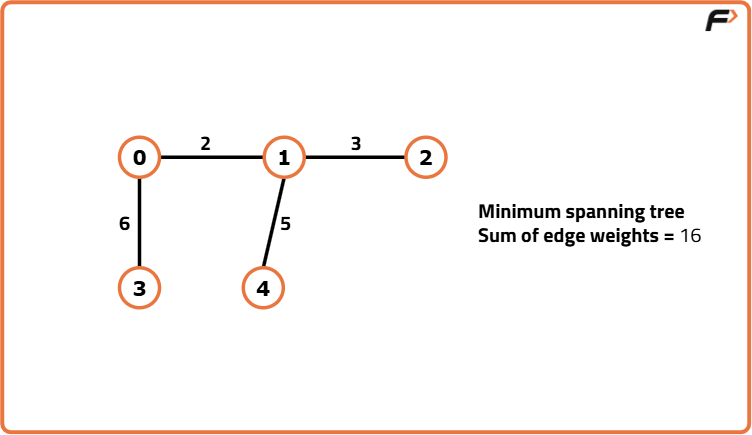
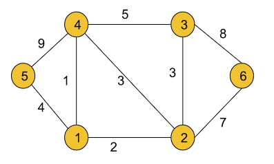
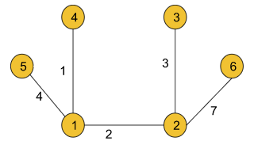

Archived from https://takeuforward.org/data-structure/minimum-spanning-tree-theory-g-44/
Spanning Tree:
A spanning tree is a tree in which we have N nodes(i.e. All the nodes present in the original graph) and N-1 edges and all nodes are reachable from each other.
Let’s understand this using an example. Assume we are given an undirected weighted graph with N nodes and M edges. Here in this example, we have taken N as 5 and M as 6.

For the above graph, if we try to draw a spanning tree, the following illustration will be one:

We can draw more spanning trees for the given graph. Two of them are like the following:

Note: Point to remember is that a graph may have more than one spanning trees.
All the above spanning trees contain some edge weights. For each of them, if we add the edge weights we can get the sum for that particular tree. Now, let’s try to figure out the minimum spanning tree:
Minimum Spanning Tree:
Among all possible spanning trees of a graph, the minimum spanning tree is the one for which the sum of all the edge weights is the minimum. Let’s understand the definition using the given graph drawn above. Until now, for the given graph we have drawn three spanning trees with the sum of edge weights 18, 24, and 18. If we can draw all possible spanning trees, we will find that the following spanning tree with the minimum sum of edge weights 16 is the minimum spanning tree for the given graph:

Note: There may exist multiple minimum spanning trees for a graph like a graph may have multiple spanning trees.
Practice Problem
Now, in case you have understood the concepts well, you can try to figure out the minimum spanning tree for the following undirected weighted graph:

Answer:Sum of edge weights = 17The MST of the given Graph will look like this:

There are a couple of algorithms that help us to find the minimum spanning tree of a graph. One is Prim’s algorithm and the other is Kruskal’s algorithm. We will be discussing all of them in the upcoming articles.